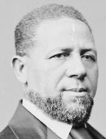

|

|

|
|
|
The first black American to serve in either house of Congress, Hiram Rhodes Revels was born
in Fayetteville, North Carolina, of mixed black, white, and Indian ancestry.
Educated in Fayetteville, where he worked as a barber, Revels subsequently
attended a Quaker seminary in Indiana and Knox College in Illinois (1856-57).
Ordained an A.M.E. minister in 1845, Revels preached in Indiana, Illinois, Ohio,
Tennessee, Missouri, Kansas, and Maryland during the 1850s. For a time, he
taught school in Saint Louis and was principal of a black high school in
Baltimore. In 1854, he was briefly imprisoned in Missouri for "preaching the
gospel to Negroes." Once, while traveling with his family, Revels was ordered
into the smoking car on a train in Kansas. "I do not wish my wife and children
to be there and listen to such language," he insisted, and was allowed to remain
in the first-class car.
During the Civil War, Revels helped raise black regiments in Maryland and
Missouri and served briefly as an army chaplain. He came to Mississippi in 1865,
worked for the Freedmen's Bureau, and chaired a black meeting in Vicksburg to
raise money for schools. After leaving the state for two years because of ill
health, he returned to Mississippi, serving as an alderman in Natchez in 1868,
and was elected to the state Senate from Adams County in 1869. Soon after taking
his seat, Revels was elected to fill the state's unexpired term in the U.S.
Senate, and served from February 1870 to March 1871. Upon the death of James
Lynch, Revels served as Mississippi's secretary of state, December
1872-September 1873.
After leaving the Senate, Revels was appointed the first president of Alcorn
Agricultural College, later Alcorn State University, the new state college for
blacks in Rodney, Mississippi. He was dismissed in 1874, when he defected from
the Republican to the Democratic party, but was reappointed in 1876 by the new
Democratic administration of the state, serving to 1882. Subsequently, he
devoted his attention to the work of the Methodist Episcopal Church (North),
which he had joined during the Civil War. Although considered a conservative in
Reconstruction politics, Revels in 1876 protested, unsuccessfully, his church's
plans to hold racially segregated annual conferences in the South. In the 1890s,
he owned a plantation near Natchez.
Revels's daughter Susan edited a black newspaper in Seattle. Horace Cayton,
the coauthor of the classic study Black Metropolis, and Revels Cayton, a black
labor leader, were his grandsons.
Source: Eric Foner, Freedom's Lawmakers: A Directory of Black
Officeholders during Reconstruction (New York: Oxford University Press,
1993), 181.
|